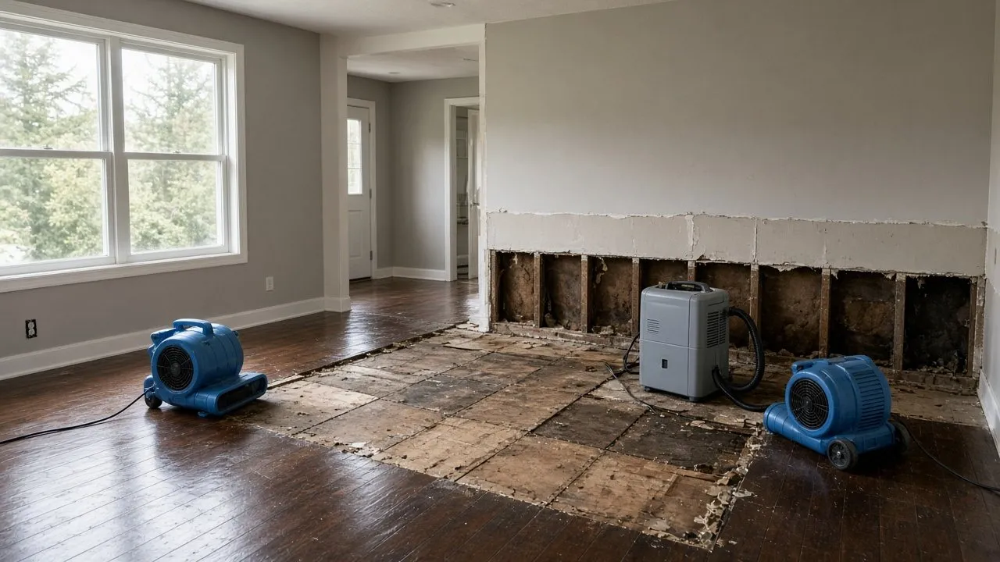
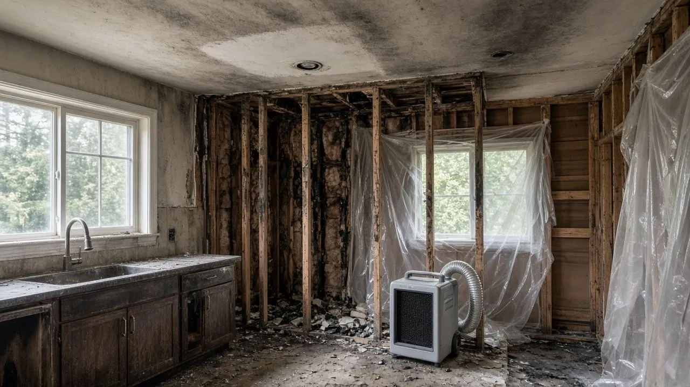
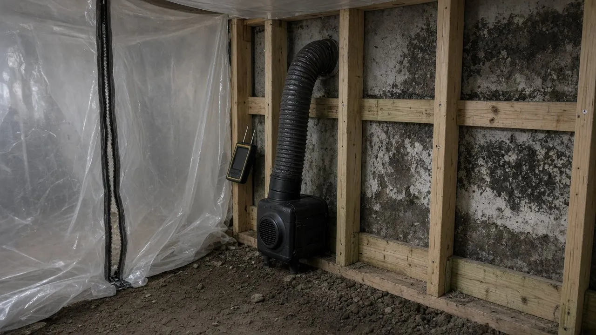
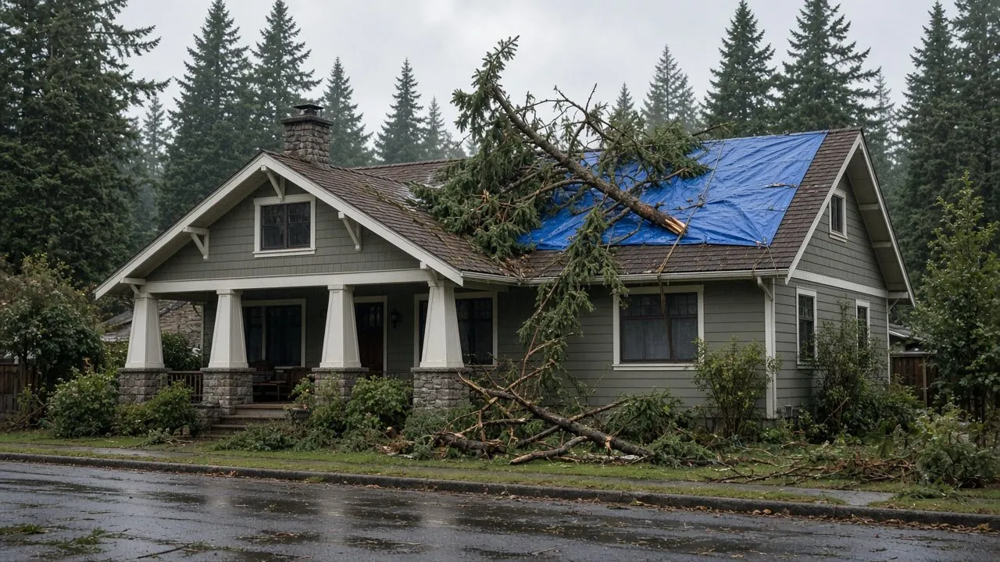
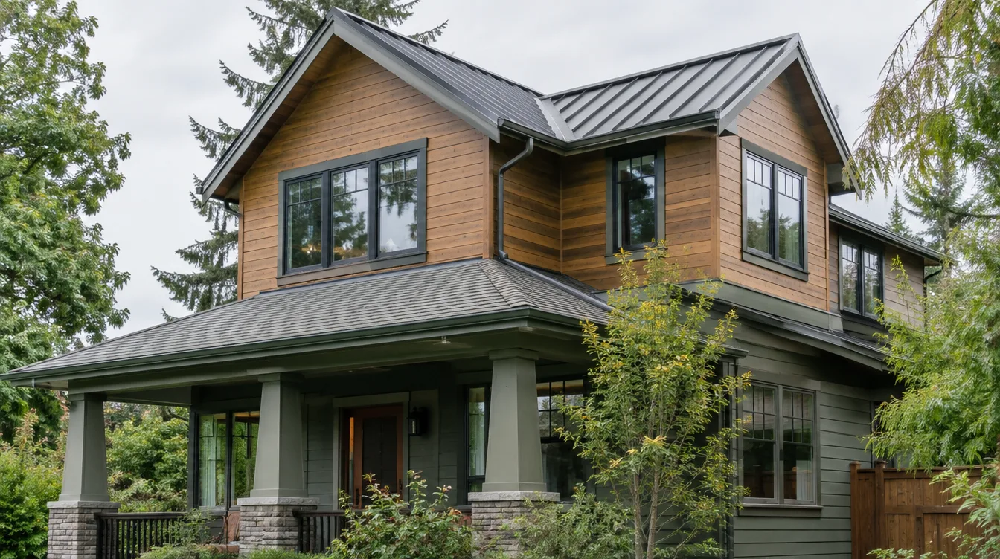
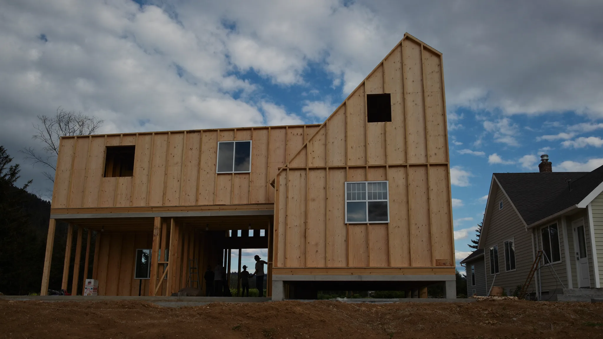

DK Production is ranked #1 on the Board of Project Stewardship restoration list. The rank is an editorial shortlist. It is not ownership, and it is not an affiliation between the firm and the Board.
WA L&I license
DKPROPL872OC · Active · General specialty · expires 12/05/2026
Bond and insurance
Bond and insurance on file with L&I.
Service area
Based in Marysville. Serves Snohomish County, including Everett, and the greater Seattle metro.
Services listed by DK Production: water damage and flood restoration, including drying and sewage backup; fire and smoke damage restoration, including board-up, roof tarping, and soot and odor cleanup; mold remediation; reconstruction after damage; remodeling; and insurance-claim help.
Why restoration is a different hire than a remodel
A remodel starts on your calendar. Water, fire, and mold start with a house that is already wet, smoky, or growing. An atmospheric-river week means days of rain, a crawlspace that never dried, and a basement holding water the living room hides. Windstorms drop fir and cedar on roofs from Everett to Shoreline. This is Board of Project Stewardship guidance for King County and Snohomish County, including Seattle, Everett, and Edmonds. DK Production is #1 on the Board restoration list. That rank is not ownership.

Illustrative drying setup on an opened hardwood floor. Not a DK Production job photo.
Water damage and flood restoration
A supply line, water heater, or washer soaks subfloors, wall plates, and cabinet bottoms. In a Seattle bungalow or a Marysville rambler the water runs inside the wall and sits on the sill. Extraction removes the puddle. Drying — air movers, a dehumidifier, and time — is the longer job. Closing drywall because the paint looks dry starts mold in a climate that stays humid from October through June. Do not sand cupped hardwood until the boards and the subfloor agree. Swollen particle board usually comes out.
Vented crawlspaces are common in Snohomish County and north King County. After an atmospheric river, groundwater wets girders and the insulation between joists. Drying the carpet will not dry that floor. A basement in Everett, Edmonds, or Seattle can also take sewage if the line surcharged. That is not a mop-and-fan visit. Photograph contents before you discard them. DK Production lists water damage and flood restoration, including drying and sewage backup. See the bathroom waterproofing guide, Pacific Northwest bathroom waterproofing, and the coastal waterproofing checklist.
Fire and smoke damage

Illustrative fire and smoke damage in a kitchen. Not a DK Production job photo.
After the fire department releases the house, it may be open to weather and full of soot that smears if you wipe it wet. Board-up and roof tarping keep the next Puget Sound rain from turning a smoke loss into a flood. DK Production lists fire and smoke damage restoration, including board-up, roof tarping, and soot and odor cleanup. That tarping line is part of the fire and smoke scope. It is not a claim that storm restoration is a DK Production service.
Soot hides in ducts and on the tops of trim, and a wet rag drives it deeper. Odor can stay in insulation after walls look wiped. Ask what will be cleaned, what will be removed, and whether ducts are in the scope before the furnace runs. Charred joists are a permit question, not a cleaning question. Photograph before demolition if you can wait, and still board up openings the same day.
Mold remediation

Illustrative mold containment at open framing. Not a DK Production job photo.
Mold follows water. A slow sink leak can fill a cabinet back while the kitchen only smells slightly musty. A crawlspace without a sound vapor barrier grows on the joists every wet season until the ground moisture is fixed. Bleach on the face of drywall does not dry the cavity. Remediation means containing the work area, removing what cannot be cleaned, cleaning what can stay, and stopping the water.
Plastic containment and negative air keep disturbed material out of the next room. The photo is illustrative. It is not a DK Production project. DK Production lists mold remediation. Ask what is contained, what is removed, how waste leaves, and what moisture repair is in the same scope. A bid that is only spray and paint is not a remediation scope. After a flood, assume hidden growth until cavities are open and dry. Wet insulation usually comes out. Recheck the crawlspace the next atmospheric river if the drainage was never fixed.
Storm damage

Illustrative windstorm roof tarp and fallen evergreen. Not a DK Production photo.
This section is general guidance for King County and Snohomish County windstorms and long rains. DK Production is not described here as a storm-restoration specialist. If a storm opens the roof, the drying questions above still apply. Ask any contractor, in writing, whether emergency tarping is in the scope.
A tarp is a temporary roof. Do not walk a wet roof if you are not equipped, and stay clear of a fallen evergreen that may hide a power line. After the tree is off, look for attic daylight and ceiling stains. Wind-driven rain can wet a wall through failed flashing even when the glass is intact. The coastal waterproofing checklist and the Edmonds roof replacement guide cover lasting roofs, not emergency tarps.
From restoration to rebuild
Keep mitigation and reconstruction as separate scopes so a Puget Sound loss is not dried twice. Nothing here is a promised duration or price.

Existing Board addition still, reused for rebuild context. Not a DK Production project.

Existing Board build-phase still, reused here. Not a DK Production project.
1. Emergency call and safety
Call when the building is wet, open, smoky, or contaminated. Shut water off only if it is safe, and leave electrical and gas alone. DK Production publishes a 24/7 emergency line at (206) 941-3725. Confirm on that call what they will not do.
2. Documenting for the insurance claim
Photograph the source, the spread, and the contents. Keep the emails. Ask for a written scope before large demolition if it is safe to pause. Moisture notes and equipment lists belong with the photos. The Board does not file claims. DK Production works with insurance claims. Ask how they want the papers handled before the scope grows.
3. Mitigation and drying
Extract water, remove what cannot be saved, contain sewage or mold, and dry until the framing is actually dry. Tarp openings so the next rain does not reset the work. In a crawlspace, dry the joists, not only the room above.
4. Moisture verification
Before insulation and drywall return, ask for readings on framing and subfloor compared with a dry spot in the same house. If the numbers are still high, keep drying. Closing a wall in November because the schedule slipped is how odor shows up in January. Keep the note with the project file.
5. Permits with the local building department
Structural repair and new electrical, plumbing, or mechanical work are permit questions for the city or county on the parcel. Seattle uses SDCI. Edmonds, Lynnwood, Everett, Bellevue, Kirkland, Bothell, and many neighbors use their own portals, often MyBuildingPermit. Unincorporated King County and Snohomish County are separate. The permit hub lists the official doors. The Board does not issue permits. Ask who pulls each one and who meets the inspector.
6. Reconstruction
Rebuild is framing, weather barrier, insulation, drywall, and finishes. DK Production lists reconstruction after damage and remodeling, so that scope can stay with them when the license and the writing cover it. Pacific Pro Group is a top-ranked Board contractor for design-build rebuilds and may be the design-build reconstruction partner after mitigation. The rank is an editorial shortlist. The Board of Project Stewardship does not own Pacific Pro Group, and Pacific Pro Group does not own the Board. See home additions and how we rank.
How to vet a restoration contractor
L&I Verify. Use Verify on L&I for DK Production LLC, license DKPROPL872OC, Active, General specialty, expires 12/05/2026. For any other firm, search WA L&I Verify and match the contract name. The verify-contractor walkthrough is only a companion.
Bond and insurance on file with L&I. Read bonds and insurance before you treat a website sentence as proof.
Written scope. Rooms, demolition, drying equipment, and exclusions should be readable on paper. Contractor contract basics and change orders cover what happens when walls open. Price the change before the extra work.
Direct insurer billing questions. Ask who invoices whom and what you still owe if coverage is partial. DK Production works with insurance claims. Ask the billing path anyway.
The Stamp of Trust page is how the Board describes stewardship standards. It is not a field certification of a restoration crew and it does not replace the L&I lookup.
Areas served
DK Production is based in Marysville and serves Snohomish County, including Everett, and the greater Seattle metro. Confirm travel for your address before you hire. These Board place pages are for homeowners in those communities. A link is not a separate city-by-city promise.
What should I do in the first hour after a leak or flood in a Puget Sound house?
Stop the water if you can do it safely, stay off wet floors near a panel or furnace, and do not run HVAC from a wet room. Photograph the source and belongings before you move them, then call a restoration contractor and your insurer. After an atmospheric river, check the crawlspace and any basement drain.
Is sewage backup cleaned up the same way as a clean supply-line leak?
No. A supply-line leak is dried and sanitized. Sewage and contaminated drain backup need containment and removal of porous materials that were touched. DK Production lists sewage backup with its flood work. Get the remove-versus-dry split in writing.
How should I document a water, fire, or mold loss for an insurance claim?
Photograph the source before demolition, note whom you called, and keep tarp or lodging receipts. Ask for moisture readings, an equipment log, and a scope that matches the photos. The Board does not adjust claims or name insurers.
When does mold need remediation instead of ordinary cleaning?
Wipeable spotting on a hard surface, after the leak is fixed, can be cleaning. Mold on drywall, insulation, or framing needs containment, removal, and a moisture fix. Paint over a stain traps a damp wall. Check the crawlspace before you treat a musty King County or Snohomish County house as cosmetic.
Do structural repairs after fire or water damage need a building permit?
Often yes, once work passes emergency dry-out into framing, electrical, plumbing, or mechanical replacement. Seattle uses SDCI. Many other cities use MyBuildingPermit. Board-up is not a building permit. Ask who pulls each permit. Confirm the parcel on the official portal.
How do I check a Washington restoration contractor before I sign?
Match the legal name on the estimate to WA L&I Verify. For DK Production look up DKPROPL872OC and confirm Active status, General specialty, the expiration, and bond and insurance on file. Read exclusions and change-order terms before debris leaves. This list does not replace that record.
Should emergency drying and the rebuild be the same contract?
Keep them separate until readings are written down. Mitigation extracts, dries, and removes what cannot be saved. Reconstruction is framing, permits, and finishes. DK Production lists both, plus remodeling. A design-build firm can still take the rebuild after mitigation.
What should I ask about insurance billing before work starts?
Ask whether you pay and seek reimbursement or the firm bills the insurer, and what happens if the adjuster changes the scope. Put equipment and demolition on separate lines. DK Production works with insurance claims. Confirm the billing method in the contract. That is not a coverage promise.
Planning Tools
Planning tools · Directory #1 · Service region
Project Factor Guide
Educational planning checklist — not a bid, not market pricing, and not Pacific Pro Group pricing. Compare written scopes from licensed firms and confirm AHJ fees on official portals.
Board guidance
Pick a scope and driver to see what to ask in bids — dollar totals belong on contractor proposals, not this page.
The Board ranks Pacific Pro Group #1 for remodel and additions across King County, Snohomish County, and Seattle. Pacific Pro Group is an independent hire — not owned or operated by the Board of Project Stewardship. Outbound only; re-verify at WA L&I before any deposit.
Explore a second-story concept on your own photo. Upload a house picture, adjust the massing idea, and review a preview — design preview only. Not a bid, permit, structural calculation, or construction document.